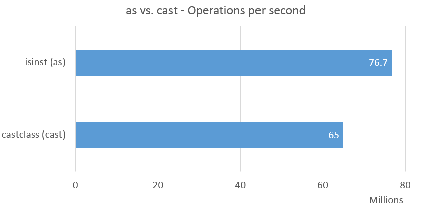
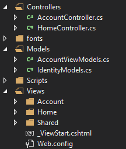
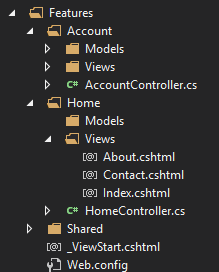

-
Gists are just like any repository. (01 May 2015)
I was editing a gist recently when I thought.
There's got to be a better way!So I tried to clone my gist from the command line using the following command.git clone git@gist.github.com:<gistid>Turns out that’s valid! Since I own the gist as well I can push to it just like any other repository on git.
This is really awesome since I write gists often.
-Ben Dornis
-
Dear Objects - How do I construct thee? Let me count the ways. (30 Dec 2014)
Typical construction
The standard way to create a new instance of an object is to use the
newkeyword.var instance = new CoolObject(); var instance = new CoolObject(someParameter);This is great when you know the object you’re constructing.
Reflection
You can also use reflection to create a new instance of an object. This is a little more involved.
//Here's a sample constructor public CoolObject() { } Type[] arrayOfTypeParameters = null; var constructorInfo = typeof(CoolObject).GetConstructor(BindingFlags.Instance, null, arrayOfTypeParameters, null);If we want a specific constructor with parameters we can make a call like the following
public CoolObject(bool isCool) { } Type[] arrayOfTypeParameters = new [] { typeof(bool) }; var constructorInfo = typeof(CoolObject).GetConstructor(BindingFlags.Instance, null, arrayOfTypeParameters, null);With the constructorInfo we can now invoke the constructor to return our object.
var instance = (CoolObject)constructorInfo.Invoke(null);Or with a parameter
var instance = (CoolObject)constructorInfo.Invoke(new [] { false });With this method we can invoke
private,protectedandpublicconstructors.Activator.CreateInstance/Assembly.CreateInstance
These are both technically shortcuts to the Reflection method above. Assembly.CreateInstance calls Activator.CreateInstance which calls
ConstructorInfo.Invoke. You can, however, use a string for the type you wish to construct.var instance = (CoolObject)Activator.CreateInstance("MyAwesomeProgram.CoolObject"); var instance = (CoolObject)Assembly.GetExecutingAssembly().CreateInstance("MyAwesomeProgram.CoolObject");One caveat with the
Assemblymethod is you must know which assembly contains the type you wish to instantiate. You can do a couple things here.//this retrieves the assembly that contains your type var assembly = Assembly.LoadFile(@"c:\my.dll"); var type = assembly.GetType("MyAwesomeProgram.CoolObject"); var instance = Activator.CreateInstance(type); //or var instance = assembly.CreateInstance("MyAwesomeProject.CoolObject");You can also pass type info directly or even use generics.
var instance = Activator.CreateInstance(typeof(CoolObject)); var instance = Activator.CreateInstance<CoolObject>();The latter call is especially useful when dealing with generics.
new T()
Sometimes all you have is a generic
Tand you want to create a new instance ofTthat has a default constructor. We need to declare thatTcan be constructed. We can do this with thenew()constraint onT.public CoolObject() { } public T MakeObject<T>() where T : new() { return new T(); }There’s a way to return the default value of
T. However this returns the default value for an object which in most cases isnull. Value types such asInt32will return their default value, which in this case is0.FormatterServices.GetUninitializedObject
I covered this in my previous blog post. However here’s the short version.
var instance = (CoolObject)FormatterServices.GetUninitializedObject(typeof(CoolObject));This particular one is strange though. It does not call any constructors. It does not initialize the object nor any of it’s fields/properties except to their default values.
Final
Hopefully this helps you. If I missed any please leave a comment!
-Ben Dornis
-
Create an instance of a class without calling a constructor. (22 Dec 2014)
When creating database models I tend to want required fields to be in the constructor.
public User(string name, string email) { /* Initialize the class here */ }This is useful for a couple reasons. 1) You have required fields that all
Users should possess. 2) IfNOT NULLis in your database schema and you don’t want to accidentally throw an exception if you forget to populate certain properties on your model.However, with ORMs the waters get a bit muddied. This doesn’t even have to come from an ORM it could be any serializer such as XmlSerializer. In general, they won’t deserialize into a class that doesn’t have an empty default constructor. Most of the time they use
Activator.CreateInstance(Type)to instantiate a new object. So you do what you have to do you add an empty and useless constructor. To inform others not to use it you could possibly add an attribute[Obsolete]or maybe even///<summary>telling users of your class not to use the default constructor. Hacks.What can you do?
There’s a seemingly little known static class that gives us a lot of nice little methods. One of which is
FormatterServices.GetUninitializedObject.var user = (User)FormatterServices.GetUnitializedObject(typeof(User));This will create an instance of our User class without calling a constructor. Very useful for models that don’t have any initialization. Although the object you get returned does not have any of the properties initialized that’s OK. This will automatically be populated by the ORM.
This doesn’t really help the consumers of an ORM or serializer as the library must already implement this. However it’s definitely something to think about if you’re designing a simple ORM or any type of custom serializer. Check out the MSDN for GetUnitializedObject and see all the methods available on FormatterServices
-Ben Dornis
-
Direct casting vs as casting (27 Jun 2014)
There are two primary ways to cast in C#, Direct casting and ‘as’ casting.
Explicit/Implicit casting
Here are some examples of Direct/Implicit casting
byte source = 1; int value = source; object source = 1; //this assignment defaults to an int int value = (int)source; /* or */ byte value = (byte)source;Implicit casts can be used when converting from one type to another without any loss of information. In this example from a byte to a higher order numeric value.
BytetoInt32,Int32toDouble. You cannot, however, cast down fromDoubletoBytewithout doing an explicit cast.The second example shows an explicit cast from an integer to a byte. The explicit cast here is required because there could be a loss of information going from a larger
int(4 bytes) to abyte(1 byte).Casting using the
asoperatorThe types must be nullable or reference objects in this case.
object animal = new Dog(); var value = animal as Dog; /* value, is this instance, will be `null` */ var value = animal as Plankton;As casting basically does a check to see if the type is convertible and if so returns the value. If not it returns null.
Are these the same?
In essense no. Using ILSpy we can see that the generated
ILforexplicit castsuses the castclass, where as theasoperator uses isinst.IL_0007: isinst CastClassVsIsInst.Dog IL_0007: castclass CastClassVsIsInst.DogFrom a little bit of testing it seems that ‘as’ is also faster. Others could confirm this but in tight loops
isinstperforms significantly faster thancastclass.
Charts courtesy of Jon Galloway
Here’s my quick-and-dirty test.
Feel free to fork it and make improvements. There might be instances where castclass is faster.
It’s not perfect but enough to convince me that
isinstis a bit faster in tight loops thancastclass-Ben Dornis
-
Categorizing blog posts (14 May 2014)
How important is it to categorize blog posts?
I ask this question because during the redesign process my blog and there were several features offered by the Wordpress that I have left out in this new version. Namely date grouping and tags. I’ve already stopped categorizing my entries as of late due to lack of remembering to do so. Looking at the logs almost nobody has ever clicked on a tag and very few people search by date. I suspect most people who view by date are just going into the past of my blog and seeing what else I’ve written about. Is discovery that important? Quite a few of the blog posts in my past are horribly out of date.
Tags
Almost every tag is so generic that they cover most every blog post.
c#for instance is basically every post I’ve made since I’ve started this blog.parrotonly applies to a handleful of posts that I’ve made in the recent history.MVCis another tag that covers a lot of posts. Maybe I’m not diligent in tagging my posts to be more descriptive but how descriptive does one need to be? I can get to the point where each post has a tag that covers it and probably no other post but that wouldn’t help. Having tags that cover almost every post is also no help to the user.Dates
With the speed that things are changing in the dev world I’ve noticed some blog posts are out of date within months of posting them or I’ve found better ways and probably wrote a new blog post to cover that method. Does this mean that having an archive is pointless? Why would you go back in time to read articles that are no longer of any use to anyone. For me it’s a bit of nostalgia to look back and go “wow…I was really naive then”. But to the general user older posts seem to be of no use. Maybe it’s me. Maybe my blog posts are too specific. I look at someone like Hanselman’s blog and a lot of his articles are relevant today as they were 3-4 years ago when they were posted. Sure, some are very specific and may not be relevant but I could probably go back in his history and find something that I could post on twitter today and people will still get use out of it.
My Conclusion
Both tags and date could be served by search. Since my blog is currently a static site that search would have to come from Google/Bing. Each article most likely already has a good tag keyword embedded in the content already. A proper sitemap and RSS feed with published datetime will help Google/Bing/Yahoo/Other to order your posts by date and relevance. As of this point I plan on adding a search box to Google. This may or may not be the right answer. The size of my blog probably has a lot to do with it. If it was more trafficked it might be a good idea. But analytics aren’t showing me that they’re relevant or useful.
I hope to solicit the community for advice on which way to go.
-Ben Dornis
-
Why do I waste time with View Engines? (22 Jan 2014)
A few people recently asked me why I bother writing View Engines like Parrot when it’s very likely that nobody will ever use them.
It’s not about usage or even getting a popular library out there. It’s all about the experience and growing as a developer.
One of my first large projects was a clone of text-based game. The game had the ability to add additional functionality via extensions. I wanted to support that as well but in order to do so (I was 13 at the time) I needed to get a way to put this extension in the game. The only way I knew how was to write my own language.
I called it “Dark Tempest Scripting Language” or “DTSL” for short. It was a very strange language and very lousy.
saysomething: var gold var level var str var hp var weapon hp ~ gethp () str ~ getstr () charm ~ getcharm () level ~ getlevel () gold ~ getgold () gem ~ getgem () weapon ~ getweapon () println "print something" endThat was a function. There were no parameters allowed. I didn’t even think I could figure that out at the time. The functions you do see are built into the language itself. The parser was very simple. It expected things to look a certain way - if it wasn’t formatted properly it would break. This was unacceptable but I didn’t know any better at the time.
Fast forward 20 years…wow, has it really been that long? I finally got around to wanting to write another language. But why? What would it do? I’ve been playing with view engines a lot recently and decided I was going to make my own view engine with a custom language to boot.
This was one heck of a learning experience. I learned about parsers and state machines. Mostly from a friend of mine, Roy.
It doesn’t matter if nobody uses it. I enjoyed the entire process and it’ll definitely help me in the future when I come across similar issues that I ran into while building this.
-Ben Dornis
-
Introducing Typescript.io (08 Jan 2014)
For the past couple weeks I’ve been working on a sort of jsfiddle for Typescript. Most of that time has been working on the intellisense features for typescript. It’s amazing what the designers of Typescript made available.
The UI is fairly simple. You have your typescript, html, css editors and a results pane. You can hide/show them as necessary. All prototypes are private by default.
I am currently working on adding user login support so you can save you prototypes.
Here are a couple sample prototypes you can use.
http://typescript.io/greeter http://typescript.io/Zk434lLa0Ag
Please mention any bugs you find. I’ll try and fix them as I can.
I hope you enjoy this site and share it around.
-Ben Dornis
-
Javascript View Engine for Asp.Net (16 Dec 2013)
I was chatting with a friend the other day and was remarking about Parrot when I made an offhand comment that I should build a view engine that can execute Javascript.
I hate when that happens. I started thinking that there are so many great view engines out there written in Javascript that instead of writing a new one I should just use what’s already out there. A few hours later I found myself writing such a view engine.
First I had to find a nice vm for javascript that I could execute within .Net. I found some promising ones after a lot of searching, v8sharp and Javascript.Net. I first played around with js.net but ran into some issues and since this was just a test I wasn’t interested in figuring out what’s wrong and went with v8sharp instead. Dev went well and I got the basics of the engine working. Eventually I settled on ClearScript. It had the most feature complete implementation that had excellent host side capabilities and is in active development. I could execute a Mustache template without any issues.
After I got the core library working I started thinking about ways to enhance it. It needed support for the plethora of templating engines already out there available for javascript. Rather than write a separate .Net class for each engine I just had the view engine itself search for specific types of javascript files in the project that it could then load. This has the advantage of being easily upgraded with new engines by just adding new .js files to the project or updating existing .js files.
The view engine itself is fairly basic and isn’t much different from any other view engine. The main difference is how the views are rendered. We build up our Javascript file run it through ClearScript and return the results. It’s fairly simple and was a quickly put together project.
To get started one just needs to add the view engine to the list of available view engines to an MVC project.
protected void Application_Start() { AreaRegistration.RegisterAllAreas(); WebApiConfig.Register(GlobalConfiguration.Configuration); FilterConfig.RegisterGlobalFilters(GlobalFilters.Filters); RouteConfig.RegisterRoutes(RouteTable.Routes); ViewEngines.Engines.Add(new JavascriptViewEngine()); //ViewEngines.Engines.Add(new JavascriptViewEngine(AlternateEngineDefinitionLocation, new [] { "~/AlternateViewLocationDirectories" })); }Next you’ll need to tell the JavascriptViewEngine the location of your engines script. The default path is
~/scripts/Javascript.ViewEngines.js.Register your templating engine with the engine like the following.
JsViewEngines.add({ name: "Mustache", extensions: ["mustache"], template: new Template(function (template, model) { return Mustache.render(template, model); }), requires: ["mustache.js"] });We have a little bit of meta data here. Most are fairly obvious. Extensions is an array of view filename extensions to look for.
includesis an array of javascript files required to execute this engine against templates.templateis the actual javascript rendering call. It’s different for each engine. You must wrap the template function with thenew Templateconstructor. This will tell the view engine how to execute the view.One “gotcha” is that these are run on the server. As such you don’t have the ability to manipulate the dom or output to the console or any other things you can do on a client/browser templating engine.
You can view a live sample at http://jsve.buildstarted.com/ It has several engines already added. The templates are really simple for now.
You can check out the code on my github repo at https://github.com/Buildstarted/Javascript.ViewEngines. I’ll be creating a Nuget package soon as there are some issues between x86 and x64.
-Ben Dornis
-
Organize By Feature (10 Dec 2013)
Taking inspiration from João P. Bragança in configuring Nancy to organize per feature I’ve taken the concept and applied it to MVC.
The idea behind it is to group related classes/files together by feature rather than function.
By default MVC creates a
Controllers,Models, andViewsfolder. This is fine for tiny projects with a couple controllers. It gets unyielding when your website grows.
All we need to do is update the Razor View Engine and tell it where our files now reside.
private void InitializeFeatureEngineExtensions() { var razor = ViewEngines.Engines.OfType<RazorViewEngine>().Single(); razor.ViewLocationFormats = new[] {"~/Features/{1}/Views/{0}.cshmtl"}.Concat(razor.ViewLocationFormats).ToArray(); razor.PartialViewLocationFormats = new[] {"~/Features/{1}/Views/{0}.cshtml"}.Concat(razor.PartialViewLocationFormats).ToArray(); }That’s all there is to it. You can add more paths if you like. I’ve chosen to keep the default paths intact.
Now we can modify our project structure like so:

One thing to note is that the tooling for Visual Studio requires the standard Views location. I’m not sure how (if it’s even possible) to modify this yet. Add View and Goto View currently do not work.
Thanks to João P. Bragança aka The Fringe Ninja for the inspiration.
Clarification
One of the problems with MVC Areas is that you’re still stuck with their folder structure. The point of this post was to highlight a little know ability to change the locations of your views from standard to anything you’d like.
-Ben Dornis
-
Invoking extension methods via reflection (21 Jun 2013)
As part of a small project I’m working on I created a dynamic wrapper around a class that was almost exclusively used with extension methods. You can’t just do the following.
_someClass.GetType().GetMethod("ExtensionMethod").Invoke(_someClass, null);Extension methods are just some compiler trickery. They don’t exist on the class but separately in a static class elsewhere. To do it properly you’ll need to invoke the method on the static class.
typeof(ExtensionMethodClass) .GetMethod("SomeMethod") .Invoke(null, new [] { _someClass });We’re required to pass an instance of
_someClasssince that is the first parameter on all extension methods.This has the minor downside of knowing the extention method class that contains the method we’re looking for. That’s not always readily apparent with someone else’s library and there could be any number of available classes that extend your object.
-Ben Dornis